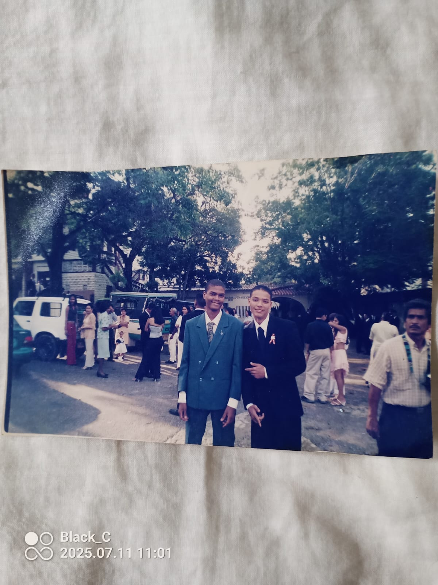

En esta imagen se puede apreciar a mi tio por parte de mi padre en sus dias de graduacion aunque llevo muchos años sin verlo siempre lo llevare en corazon ya que me recuerda mucho a mi padre no puedo adjuntar mucho sobre esto porque realmente nunca estuve mucho tiempo cerca de mi familia asi que solo tengo pocos recuerdos.
